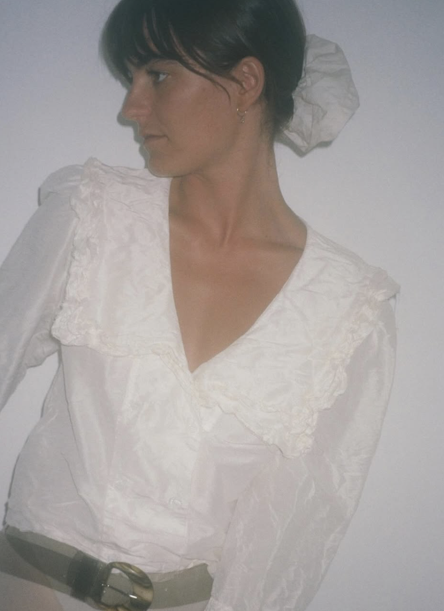
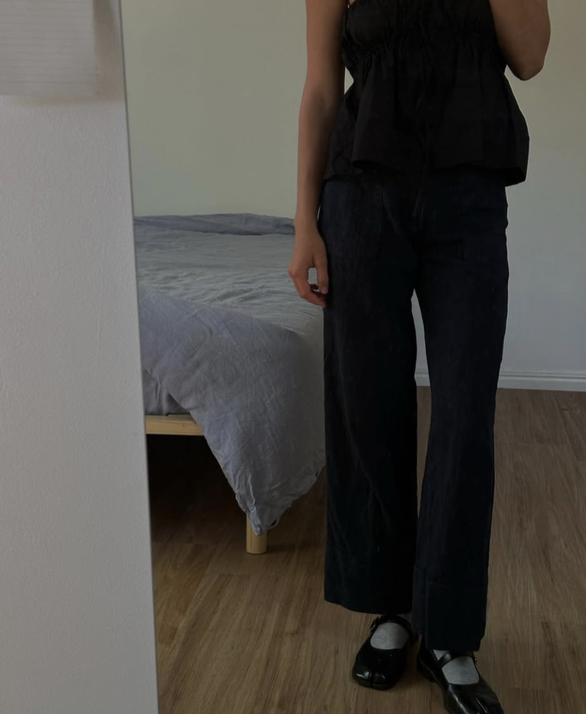

about.Based in South East Queensland, Australia. Zali is a twenty five year old multidisciplinary artist & mum.Working for herself, in photography and video for the past 9 years.
Zali studied fine art at the Byron School of Art in 2019, completing projects in a variety of mediums and a final group show.Painting & drawing has been a passion and past time for her entire life, and drawing inspiration from her love of art in her video and photography work has given Zali’s work a unique, emotive and real effect. That has ability to transport viewers to a place or time.
She also has experience in website & graphic design and is currently studying Web Developement at Coder Academy. Learning html, css and other languages to bring a full circle approach to her skillset.
 